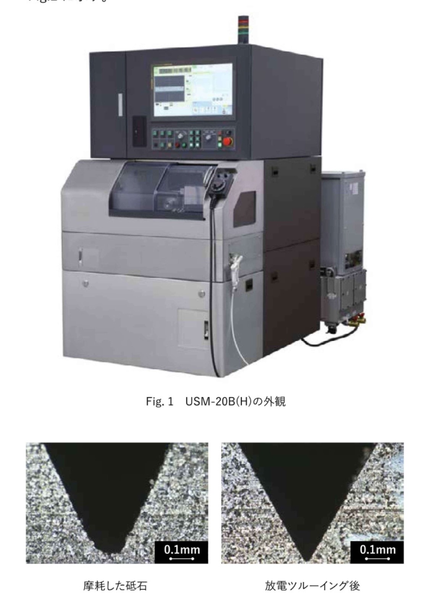
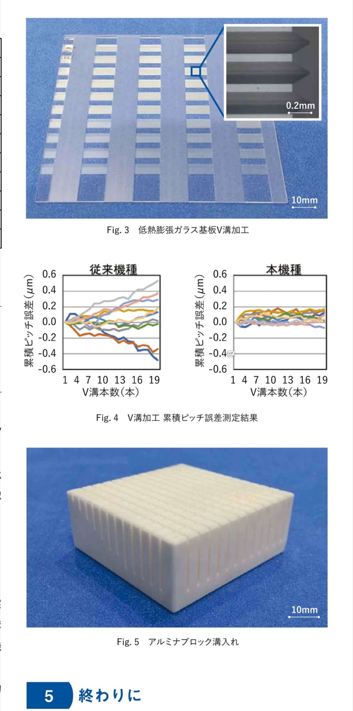
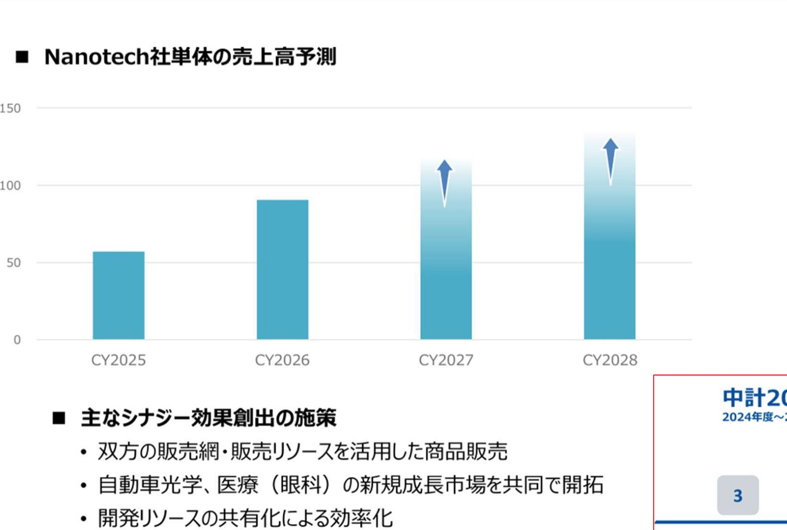
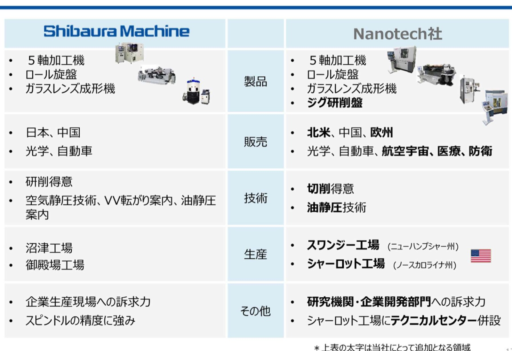
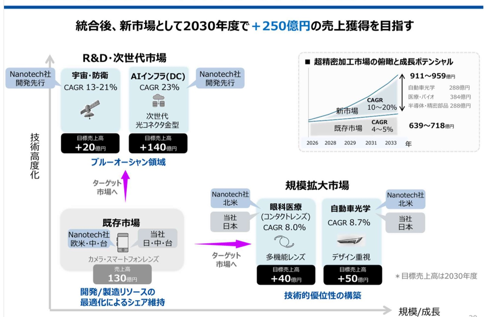

一、把三份文件合起來看：Shibaura 在補一條能力鏈
這批資料有三個層次。第一份是 USM-20B(H) 高精度開槽切斷加工機，說明機台如何把導引、主軸、定位與砥石修整整合到一個可量產的平台。第二份是田中克敏給年輕技術者的回顧，透露這類機台背後靠什麼技術土壤長出來。第三份是 Moore Nanotechnology Systems，也就是 Nanotech 社的併購簡報，說明 Shibaura 想把既有加工能力接到北美、歐洲與新應用市場。
二、USM-20B(H)：把微米級加工問題拆成機械結構問題
USM-20B(H) 對準的是光連接器 V 溝、醫療 X 光 CT 用 scintillator、自動車零件、商用噴墨印表機壓電元件，以及其他難削陶瓷。這些工件的共同點很直接：尺寸小、材料硬、位置誤差會立刻轉成性能損失。光纖連接器尤其明顯，V 溝位置偏移會拉高傳輸 loss。

- X 軸採 V-V 型動壓導引，導面以鑿磨與研磨完成，用長期真直度支撐工件送進。
- Y 軸採線性馬達與低 waving 線性導軌，刻度解析從傳統機種 2 nm 提升到 1 nm。
- 主軸採自社開發的高剛性空氣靜壓軸承，可對應 2、3、4 吋砥石。
- 床身用鑄件，目標是剛性與長期穩定；觸控面板則降低操作負荷。

三、規格背後的機制：導引、定位、主軸、truing 要一起看
| 模組 | 文件中的數值或描述 | 機制意義 |
|---|---|---|
| X 軸工件送進 | 移動量 300 mm，最大送進 2400 mm/min | 把長行程送進的直線性與速度一起處理 |
| Y 軸砥石定位 | 移動量 160 mm，最大送進 1000 mm/min，解析 1 nm | 把砥石位置誤差壓到 V 溝 pitch 精度可接受範圍 |
| 最小指令單位 | X、Y、Z 軸 0.00001 mm | 控制指令細度足以支援超精密定位 |
| 主軸 | 2 吋 4000–40000 min⁻¹；3 吋 3000–30000 min⁻¹；4 吋 2000–20000 min⁻¹ | 依砥石直徑選主軸速度區間，避免只靠單一主軸硬撐所有工況 |
| 放電 truing | 可在機上修正砥石偏擺與端部角度 | 降低換刀、修整、再校正造成的停機與誤差 |
四、田中克敏文件：超精密加工要先養基本要素
田中克敏的回顧提供另一個角度。他 1961 年進入工作機械廠，先在大型機械零件現場做加工方法、治具設計、設備修理改造與不良對策。一年畫 500 張以上圖面，10 天後就能看到圖面變成實物，也看到錯誤變成報廢品。這段經驗讓他把現場視覺、聽覺、觸覺、嗅覺當成技術者訓練場。
相較於從圖面或文獻得到的資訊，現場得到的資訊在視覺、聽覺、觸覺、嗅覺上壓倒性地多。 — 田中克敏，砥粒加工學會誌 Vol.65 No.9，2021。
這段話對 USM-20B(H) 的解讀很關鍵。機器規格常由客戶用「加工此零件的機械」提出；若等規格來了才開發要素技術，很難同時守住性能與交期。因此 Shibaura 長期先準備空氣靜壓主軸、V-V 導引、有限形 V-V 滾動導引、線性馬達、空氣靜壓工作台、鑿磨、研磨、計測器與恆溫環境。
五、Nanotech 併購：補市場入口，也補加工技術拼圖
併購簡報把 Nanotech 的價值拆成兩塊。第一塊是財務與市場：Nanotech 單體營收預測從 CY2025 約 57 億日圓，拉到 CY2026 約 90 億、CY2027 約 115 億、CY2028 約 130 億，且 CY2027、CY2028 有上修箭頭。第二塊是能力互補：Shibaura 強在日本、中國、生產現場、研削、空氣靜壓與主軸精度；Nanotech 強在北美、歐洲、研究機關與企業開發部門、切削、油靜壓與 jig 研削盤。


這筆交易不只買營收。用能力鏈看，Shibaura 原本更貼近企業量產現場，Nanotech 更貼近研究機關與開發部門。前者像 bottom-up，從現場工藝往上推；後者像 top-down，從新材料、新光學件與新機構先進入研發端。兩者接上後，開發端規格才有機會更早移入量產端。
六、2030 目標市場：AI 光連接器是最大單一增量訊號

| 市場 | 文件數字 | 判讀 |
|---|---|---|
| 宇宙・防衛 | CAGR 13–21%，目標 +20 億日圓 | Nanotech 開發先行，偏高技術門檻市場 |
| AI 基礎設施／次世代光連接器金型 | CAGR 23%，目標 +140 億日圓 | 與 USM-20B(H) 文件中的光連接器 V 溝需求形成呼應 |
| 眼科醫療／多功能鏡片 | CAGR 8.0%，目標 +40 億日圓 | Nanotech 北美入口加上 Shibaura 日本能力 |
| 自動車光學／HUD、頭燈 | CAGR 8.7%，目標 +50 億日圓 | 設計重視與光學件量產要求同時上升 |
| 既存相機與智慧手機透鏡 | 營收 130 億日圓 | 靠開發／製造資源配置維持市占 |
七、給精密加工團隊的啟示
- 不要只看機台規格表。要看規格背後的回饋路徑：導引如何穩、主軸如何穩、砥石如何修、量測如何回到加工條件。
- 不要把超精密加工當成單一製程。田中回顧提醒，超精密加工是主軸、導引、控制、加工、計測、恆溫與現場回饋的組合能力。
- 不要只把併購看成市場擴張。Nanotech 的價值在於它把 Shibaura 帶進北美、歐洲、研究端與切削／油靜壓技術圈。
- AI 基礎設施的光連接需求值得特別追。USM-20B(H) 的光連接器 V 溝加工，與 Nanotech 整合後 2030 目標中的次世代光連接器金型，出現在同一條需求鏈上。